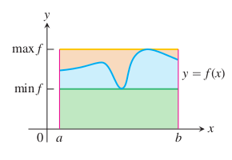
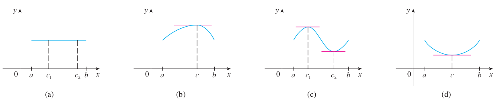
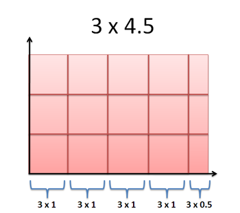
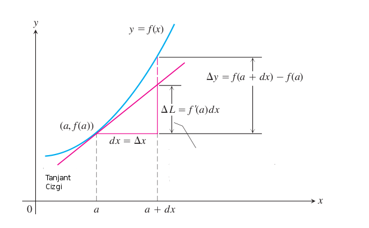
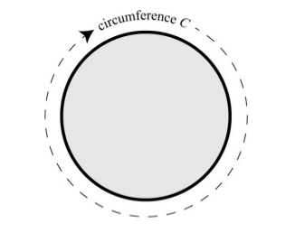
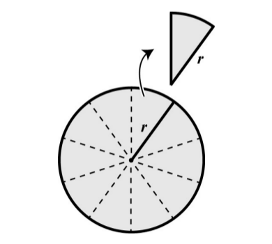
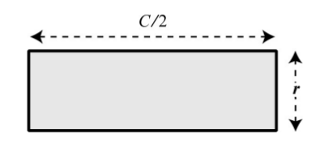

Türevler ve Entegraller 2
Daha once yaptigimiz eski anlatim altta bulunabilir.
Calculus'un Temel Teoremi (The Fundamental Theorem of Calculus)
Ana teoriyi ispatlamadan önce iki diğer teoriden bahsetmemiz, ispatlamamız lazım. Bu teorilerden biri Geçiş Değeri Teorisi (Intermediate Value Theorem) diğeri Belirli Entegraller İçin Ortalama Değer Teoremi (Mean Value Theorem for Definite Integrals). Geçiş Değeri Teorisi basitçe şunu söyler
Teori
$[a,b]$ aralığında sürekli bir fonksiyon $y=f(x)$, $f(a)$ ve $f(b)$ arasındaki her değeri muhakkak alır. Bir diğer değişle, eğer $y_o$, $f(a)$ ve $f(b)$ arasındaki bir değer ise $[a,b]$ aralığındaki bir $c$ için muhakkak $y_0 = f(c)$ olmalıdır.
Geometrik olarak bu teori $y$ eksenini $f(a)$ ve $f(b)$ arasında kesen $y=y_0$ yatay çizgisinin $y=f(x)$ fonksiyonunu muhakkak, en az bir kez keseceğidir. Grafik altta.

Sezgisel olarak bu anlamlı değil mi? Eğer sürekli bir fonksiyon var ise, $f(a)$'dan $f(b)$'ye giderken o aralıktaki her sayıya bir kez "uğramaya" mecburuz. Etraflarından dolaşmamız mümkün değil, çünkü kesintili bir fonksiyon değil, kesintisiz / sürekli bir fonksiyonumuz var. Bu teorinin daha detaylı ispatı için [1]'e bakılabilir.
Maks-Min Eşitsizliği
Eğer $[a,b]$ aralığında $f$, maksimum değer $\max f$'e ve minimum değer $min \ f$'e sahipse,
$$ \min f \cdot (b-a) \le \int_a^b f(x) \mathrm{d} x \le \max f \cdot (b-a) $$
demektir.

Bu kural diyor ki $f$'in $[a,b]$ üzerindeki entegrali hiçbir zaman $f$'in minimum'u çarpı $[a,b]$ aralığının uzunluğu'ndan küçük olamaz, ve $f$'in maksimumu çarpı $[a,b]$ aralığının uzunluğu'ndan büyük olamaz.
İspat
Eğer $(b-a)$'yi $ \sum_{k=1}^n \Delta x_k$ olarak görürsek
$$ \min \ f \cdot (b-a) = \min \ f \cdot \sum_{k=1}^n \Delta x_k $$ $$ = \sum_{k=1}^n \min \ f \cdot \Delta x_k $$
$[a,b]$ aralığındaki herhangi bir değer $c_k$ için
$$ \le \sum_{k=1}^n f(c_k) \cdot \Delta x_k $$
Öyle değil mi? $min \ f$ değeri en küçük değer ise, $[a,b]$ aralığındaki herhangi bir nokta $c_k$'nin $f$ değeri bu değere ya eşit, ya da ondan büyüktür. Yani $min \ f \le f(c_k)$. Devam edersek
$$ \le \sum_{k=1}^n \max f \cdot \Delta x_k $$
Üstteki benzer mantığı takip ediyor, bu sefer $f(c_k) \le \max f $. Son ifadedeki $max$'i dışarı alabiliriz.
$$ = \max f \sum_{k=1}^n \cdot \Delta x_k $$
$$ = \max f (b-a) $$
Rolle'nin Teorisi
Bir sonraki teoriyi ispatlamadan önce orada gerekli Rolle'nin Teorisinden bahsetmek lazım. Bu teoriyi ispatlamadan vereceğiz, kabaca doğru olduğunu anlayabiliriz, teori der ki, eğer bir fonksiyon $f$ 1) $[a,b]$ kapalı bölgesinde sürekli 2) (a,b) açık aralığında türevi alınabilir ve $f(a)=f(b)$ ise o zaman bir aynı aralıkta $f'(c)=0$ olacak şekilde bir $c$ varlığı kesindir.
Altta bazı örnekler görüyoruz,

Tarif etmek gerekirse iki nokta arasında başı ve sonu aynı olan bir fonksiyon o arada bir noktada muhakkak tepe, ya da dip noktasına varmış olmalıdır, yani türevi orada sıfır olmalıdır. Bu sezgisel olarak akla yatkın bir önerme herhalde. İspat için [2, sf. 281].
Ortalama Değer Teoremi (Türevli Form)
Eğer $f$ fonksiyonu açık aralığında (interval) $(a,b)$ türevi alınabilir halde ise ve kapalı aralıkta $[a,b]$ sürekli ise, o zaman $(a,b)$ aralığında en az bir $c$ değeri vardır ki bu değer için
$$ f'(c) = \frac{f(b) - f(a)}{b-a} $$
doğrudur.

Bu teorinin de ispatı için [2, sf. 282]'ye bakılabilir, fakat yine kabaca takip edilen tekniği tarif edeilm; eğer üstteki grafiği sağa doğru yatırırsak, yani o $l$ çizgisi tam $x$ eksenine paralel olacak şekilde saat yönüne doğru her şeyi çevirirsek, yeni $f(a)$ ve $f(b)$ aynı $y$ seviyesinde olacaklar, eh bu durumda Rolle Teorisi kullanılabilir, ve oradan gelen $c$ olma mecburiyetini ilk grafiğe tercüme edersek oradaki $c$ varlığını da ispatlamış oluruz.
Ortalama Değer Teoremi (Entegral Form)
Eğer $f$ fonksiyonu $[a,b]$ arasında sürekli ise o zaman $[a,b]$ aralığında olan bir $c$ noktasında
$$ f(c) = \frac{1}{b-a}\int_a^b f(x) \mathrm{d} x $$
eşitliği doğru olmalıdır. Yani alttaki resimde sol grafikteki mavi alanın $b-a$ ile bölünerek elde edilen ortalama değeri, $[a,b]$ aralığındaki bir $c$ üzerinden $f(c)$'ye muhakkak eşittir. Ya da bir kenarı $f(c)$, diğeri $b-a$ olan bir diktortgenin alanı (alt sağdaki resim), mavi alanın tamamına eşit olacaktır.

Maks-Min Eşitsizliğinin iki tarafını $b-a$'ya bölersek
$$ \min f \le \frac{1}{b-a} \int_a^b f(x) \mathrm{d} x \le \max f $$
elde ederiz. Eğer Geçiş Değeri Teorisi doğruysa, $\min f$ ve $\max f$ arasındaki tüm noktalar ziyaret edilmelidir. O zaman böyle bir $f(c)$ kesinlikle var demektir.
Calculus'un Temel Teoremi
Teori
Eğer $f$ fonksiyonu $[a,b]$ arasında sürekli ise o zaman
$$ F(x) = \int_a^x f(t) \mathrm{d} t $$
fonksiyonu da $[a,b]$ arasında süreklidir, ve bu fonksiyonun türevi $f(x)$'in kendisidir.
Yani
$$ F'(x) = \frac{d}{dx}\int_a^x f(t) \mathrm{d} t = f(x) $$

İspat
Türevin tanımını direk $F(x)$ üzerinde uygulayalım, $[a,b]$ içinde olan $x$ ve $x+h$ aralığını alalım, ve
$$ \frac{F(x+h)-F(x)}{h} $$
bölümünün limitinin, $h \to 0$ iken, $f(x)$'e gittiğini göstermeye çalışalım. $F(x+h)$ ve $F(x)$ fonksiyonlarını entegralleri üzerinden tanımlayalım. O zaman üstteki formülün bölüm kısmı
$$ F(x+h) - F(x) = \int_a^{x+h} f(t) \mathrm{d} t - \int_a^x f(t) \mathrm{d} t $$
Entegrallerin toplam kuralına göre üstteki formülün sağ tarafı
$$ \int_x^{x+h} f(t) \mathrm{d} t $$
ifadesidir. O zaman bölümün tamamı
$$ \frac{F(x+h)-F(x)}{h} = \frac{1}{h} \int_x^{x+h} f(t) \mathrm{d} t $$
Ortalama Değer Teoremine göre, üstteki eşitliğin sağındaki ifadenin, $x$ ve $x+h$ aralığında $f$'in aldığı değerlerden birine aynen eşit olduğunu biliyoruz. Yani o aralıktaki bir $c$ için
$$ \frac{1}{h} \int_x^{x+h} f(t) \mathrm{d} t = f(c) $$
kesinlikle doğru olmalı. Şimdi, $h \to 0$ oldukça, $x+h$ mecburen $x$'e yaklaşmak zorunda kalacaktır, çünkü $c$, $x$ ile $x+h$ arasında sıkışıp kalmıştır. $f$ fonksiyonu $x$ noktasında sürekli olduğuna göre, o zaman $f(c)$, $f(x)$'e yaklaşmalıdır.
$$ \lim_{h \to 0} f(c) = f(x) $$
Şimdi elimizdeki bu bilgiyle başa dönersek,
$$ \frac{dF}{dx} = \lim_{h \to 0} \frac{F(x+h)-F(x)}{h} $$
$$ = \lim_{h \to 0} \frac{1}{h} \int_x^{x+h} f(t) \mathrm{d} t $$
$$ = \lim_{h \to 0} f(c) $$
$$ = f(x) $$
Ek olarak ilgili bir teori daha gösterelim.
Cauchy Ortalama Değer Teorisi (Cauchy Mean-value Theorem)
Teori şöyle
Eğer $f,g$ fonksiyonları $[a,b]$ aralığında sürekli ise ve $g'(x) \ne 0$ farz edildiği durumda $[a,b]$ arasında öyle bir $c$ vardır ki,
$$ \frac{f'(c)}{g'(c)} = \frac{f(b)-f(a)}{g(b)-g(a)} $$
ifadesi doğrudur.
İspat
Şimdi daha önceden gördüğümüz Ortalama Değer Teorisi'ni (Cauchy olmayan) iki kere kullanacağız. Teoriyi önce $g(a) \ne g(b)$ olduğunu göstermek için kullanacağız. Çünkü eğer bu doğru olsaydı, Ortalama Değer Teorisi
$$ g'(c) = \frac{g(b) - g(a)}{b-a} = 0$$
olurdu, ki bu $[a,b]$ arasındaki bir $c$ için başta yaptığımız faraziyemiz $g'(x) \ne 0$ ile ters düşerdi.
İkinci kullanım: $F(x)$ adında, $f,g$ fonksiyonlarını kullanan başka bir fonksiyon kurgulayalım.
$$ F(x) = f(x) - f(a) - \frac{f(b)-f(a) }{g(b)-g(a)}[g(x)-g(a)] $$
Bu fonksiyonun türevi, $f,g$'nin türevi alınabildiği her yerde alınabilir olur. Ayrıca $F(b) = F(a) = 0$. $a,b$ değerlerini yerine koyarsak bunu görebiliriz, mesela $x=a$ için
$$ F(a) = \cancelto{0}{f(a) - f(a)} - \frac{f(b)-f(a) }{g(b)-g(a)} [\cancelto{0}{g(a)-g(a)}] $$
$$ = 0 - 0 = 0 $$
O zaman, $F(b) = F(a) = 0$'dan bir sonuca daha erişiriz. Bir fonksiyon $a,b$ uçlarında sıfır ise, bu fonksiyon bir şekilde azalıp, çoğalıyor, ya da çoğalıp azalıyor demektir, yani kesinlikle bir yerde tepe yapıyor demektir. Tepe yapmanın Calculus'taki tercümesi $[a,b]$ arasındaki bir $c$ için $F'(c)=0$ olmasıdır. O zaman üstteki $F(x)$'in türevini alırsak, ve $x=c$ dersek,
$$ F'(c) = f'(c) - \frac{f(b)-f(a)}{g(b)-g(a)}[g'(c)] = 0$$
doğru olmalıdır. Türev alırken $f(a)$ yokoldu çünkü sabitti, büyük bölüm yerinde kaldı çünkü tamamı $g(x)$ için katsayı. Eğer tekrar düzenlersek, negatif terimi sola alırsak, ve iki tarafı $g'(c)$'ye bölersek,
$$ \frac{f'(c)}{g'(c)} = \frac{f(b)-f(a)}{g(b)-g(a)} $$
ifadesini elde ederiz. Yani baştaki teoriyi elde etmiş oluruz.
Ortalama Değer Teorisini ilk kez kullanmamızın sebebi, üstteki bölenin sıfır olmamasını istediğimiz içindi, çünkü sıfırla bölüm tanımsızdır.
Türev İşlevi Nasıl Türetilir
Calculus, bir veya daha fazla dereceli denklemlerin, en yüksek noktasını bulmak, değişimi temsil etmek gibi birçok bilim ve mühendislik alanında kullanılır. Herhalde Calculus'in türev, entegral alma gibi yöntemlerini şimdiye kadar çok gördük. Fakat genelde anlatılmayan, türev ve entegral işlemlerinin nasıl yapıldığı, yani Calculus'in nasıl işlediği.
Örnek olarak, aşağıdaki grafiğe bakalım.

Gösterilen eğri, $x^2$ eğrisi. Bu eğrinin artış oranını bulmak için, artış oranını temsil eden işlevi bulabiliriz. Bu işleve türev alarak gideceğiz.
Bunu yapmanın bir yolu, y eksenindeki artışı x eksenindeki artış ile bölmek.
$$ f(x) = x^2 $$
$f(x)$'in türevini bulmak için
$$ = \frac{f(x+\Delta x) - f(x)}{\Delta x} $$
$$ = \frac{(x+\Delta x)^2 - x^2}{\Delta x} $$
$$ = \frac{x^2 + 2x\Delta x + \Delta x^2 - x^2}{\Delta x} $$
$x^2$'ler iptal oldu
$$= \frac{2x\Delta x + \Delta x^2}{\Delta x} $$
$$ = 2x + \Delta x $$
Bu elimizdeki işlev, türevin son haline yaklaştı. En son haline getirmek için, şöyle düşünmemiz gerekiyor. Artış miktarını bulduk, ama x eksenindeki artış basamağı ne kadar büyük olmalı? Sonuna kadar küçültürsek, elimize hangi işlev geçer?
Calculus'u ilk bulan Leibniz adlı matematikçi, zamanına göre büyük bir ilerleme olan bu yeni metodu bir türlü meslektaşlarına tarif edemiyordu. "$x^2$'nin türevi nasıl 2x oluyor" gibi sorulara, artış miktarı kavramını anlatıyor, fakat $2x$ formülüne geldiğini bahsederken, "$x$'teki artış sonsuz küçüldüğü için $2x$'e yaklaşıyoruz" deyince, arkadaşları onu anlamıyordu. Zamanın matematikçileri bu 'sonsuz küçüklük' kavramını çok eleştirdiler. Leibniz sonunda, "sonsuz küçük sayıların olduğu delilik gibi gelebilir, fakat pratik hesaplamalar açısından yararlı bir alet olarak Calculus'un hala yararlı olabileceğini düşünüyorum" demişti. Yani Calculus'un matematiksel ispatı Leibniz zamanında yapılamadı. Keşifler tarihin de bu olağan bir durumdur. Türevler, zamanı için yeterince normal dışı bir buluştu, bunun üzerine hemen arkasından bir diğer sarsıcı buluşun yapılması, çoğu zaman mümkün olmamaktadır.
Bu yüzden türevlerin soyut matematiksel olarak ispatının yapılması, 1821'de limit kuramının keşfine kadar beklemiştir. Fakat bu keşiften önce bile, mühendisler ve bilim adamları Calculus yöntemlerini verimli bir şekilde kullanmaya başlamışlardı.
Sonsuz Küçüklük
Leipniz ve Calculus'un "öteki babası" sayılan Newton'un söylemeye çalıştıkları, türev işleminin bir durağan resim üzerinde yapılan hesap değil, ardışıl yaklaşıklama süreci altında bir sabit sonuca "yaklaşan" hareketli bir hedef olduğu idi. Matematiksel limit kuramı, bu tür bir tarifi gösterebildiği için sonunda Calculus'u ispatlamak mümkün oldu.
$$ g(x) = 2x + \Delta x $$
$$ \lim_{\Delta x \to 0}g(x) = \lim_{\Delta x \to 0} (2x + \Delta x) $$
$$ \lim_{\Delta x \to 0}g(x) = 2x$$
Bu formüle bakarak bir daha belirtmek gerekir ki, $x$ değişimini 0'a eşitlemiyoruz. 0'a eşitleseydik, daha baştan bölünen olarak elimize sıfır geçeceği için cebirsel işlemde bu kadar ilerlememiz mümkün olmazdı. Yaptığımız, limit tarifini kullanarak, $x$ sıfıra yaklaşırken türev $2x$'e yaklaşır demektir.
Bu tanım sonucu elde ettiğimiz yeni fonksiyon da, tüm diğer fonksiyonlar gibi, aynen limitlerin çalıştığı uzayda olduğu gibi sonsuz küçük aralıklarla çalışabilecek bir tanım olduğu için, bu türetilmiş yeni fonksiyonu da normal bir fonksiyon olarak kabul etmemiz mümkün olmaktadır.
Dolaylı Türev Almak (Implicit Differentiation)
Türev alırken başlangıçta $y = x^2$ turu $y$'yi direk $x$ ile ilintilendiren açık, belirtilmiş, belli (explicit) fonksiyon varlığı farz edilir. Fakat bazen elde dolaylı $x^2+y^2 = 9$ gibi bir fonksiyon olabilir burada her iki değişken arasında bir alaka vardır fakat bağımlı, bağımsız değişken yoktur, gösterilen ilişkiyi tatmin eden tüm $x,y$ değerleri geçerli değerlerdir.

Fakat bu durumda herhangi bir $x,y$ noktasındaki eğriye teğet çizgiyi nasıl buluruz? Dolaylı türev alarak bunu başarabiliriz [4], yine $\frac{\mathrm{d}}{\mathrm{d} x}$ türevini alıyoruz ve uzun uzadıya $y$'yi $x$ üzerinden bir sürü cebirsel takla ile temsil etmeye uğraşmadan türev işlemi bu alakayı farz ediyor, ve gerektiği yerde Zincirleme Kuralı kullanıyor.
$$ \frac{\mathrm{d}}{\mathrm{d} x} (x^2) + \frac{\mathrm{d}}{\mathrm{d} x} (y^2) = \frac{\mathrm{d}}{\mathrm{d} x} (9) $$
İlk terim basit, $2x$. İkinci terimde Zincirleme Kuralı lazım,
$$ \frac{\mathrm{d}}{\mathrm{d} x} (y^2) = \frac{\mathrm{d}}{\mathrm{d} x} (y^2) \frac{\mathrm{d} y}{\mathrm{d} x} = 2y \frac{\mathrm{d} y}{\mathrm{d} x} $$
Üçüncü terim sabitin türevi olduğu için sıfır. Yani
$$ 2x + 2y \frac{\mathrm{d} y}{\mathrm{d} x} = 0 $$
Şimdi $\mathrm{d} y / \mathrm{d} x$ için düzenleme yaparsak,
$$ \frac{\mathrm{d} y}{\mathrm{d} x} = -\frac{x}{y} $$
elde ederiz.
Entegralleri Türetmek
Aynen türevleri limitler üzerinden formalize edebildiğimiz gibi entegralleri de toplamların eriştiği bir limit olarak formalize edebiliriz. Bu bakış açısını matematiksel olarak tarif eden Bernhard Riemann'dir ve tarif ettiği entegral formalizmi Riemann toplamı (Riemann sum) olarak bilinir [1, sf. 340].
Diyelim ki bir $f(x)$ fonksiyonumuz var, iki nokta arasındaki $x$ yatay eksenini $\Delta x$ büyüklüğünde $n$ tane eşit parçaya bölüyoruz, her parça ortasındaki $c_k$'de fonksiyonun değeri tabii ki $f(c_k)$, bu dikdörtgen parçasının yüksekliği, genişliği $\Delta x$. Riemann formalizmi için bu parçaların eşit büyüklükte olması gerekmez, biz alttaki örnek için eşit diyeceğiz, ve
$$ I = \lim_{n \to \infty} \sum_{k=1}^{n} f(c_k) \Delta x $$
hesabına bakacağız.
Entegralleri Nasıl Düşünelim
Calculus kitaplarında entegralleri anlatmak için çoğu zaman "toplam" kavramı on plana çıkarılır, mesela entegralin alttaki resimde $f(x)$ fonksiyonunun altında kalan ufak ufak dikdörtgenlerinin alanlarının "toplamı" olduğundan bahsedilir.

Fakat bu tür bir anlatım bazen karışıklığa yol açabiliyor [6]. Daha iyi bir anlatım entegralin "değişen değerlerin çarpımı" olduğudur. Alttaki resimdeki dikdörtgeni düşünelim,

ve diyelim ki bir dikdörtgen, entegralin hesapladığı alanı yaklaşıksal olarak temsil ediyor. Dikdörtgen alanı nasıl hesaplanır? İki kenarının çarpılmasıyla! Entegral de aslında böyle bir hesaptır, sadece kenarlardan biri sabit değildir, ve sürekli değişmektedir. Bu tür bir anlayış birimleri sonuca dahil etmek gerektiğinde ise yarar, mesela yatay ekşen zaman $t$ işe, ve dikey eksen hız $v(t)$ ise, katedilen mesafe, $v(t)$ nasıl bir şekilde verilmiş olursa olsun,
$$ Mesafe = \int v(t) \mathrm{d} t $$
formülüyle hesaplanacaktır. Eğer hız ve zaman sabit olsalar, mesela 5 ile 4 gibi, o zaman hesap son derece basit olacaktı, 3 x 4 = 12 ile sonucu bulacaktık.
Tabii ki çarpmak ile toplamak arasında yakın bağlantılar var, mesela 3 x 4'u şu şekilde resmedelim

Burada, evet, 3 değerini dört kere birbiriyle topluyoruz, 3 + 3 + 3 + 3 = 12 ve bu durum 3 x 4 ile aynı sonucu veriyor. Fakat 3'lerin toplamı, eğri altındaki alan zihniyetini daha ilerletmeden azıcık farklı bir durumu düşünelim.

Bu durumda dikey eksendeki kolonlara bir ek yaptık, ama bu ekin genişliği tam bir kolon değil, yarım bir kolon. Bu durumda alan hesabını sadece dikey kolonların toplanması olarak yapsakdik 3'u beş kere toplamamız gerekirdi, ve 15 elde ederdik, yanlış bir hesap yapmış olurduk.
Toplamın doğru olması için yatay ekşenin genişliğinin hesaba katılması gerekir, 31 + 31 + 31 + 31 + 3*0.5 = 13.5. Ya da tüm genişliği tüm yükseklik ile çarparız 3 * 4.5 = 13.5.
Peki ilk örneğe dönersek, madem çarpımlardan bahsediyoruz, diyelim ki $v(t) = 2t$ o zaman $t \cdot 2t$ diyemez miyiz? Bu da olmaz, çünkü $t\cdot 2t = 2t^2$ bize sadece tek bir $t$ anındaki bir hesabı veriyor. Biz verilen bir başlangıç ve bitiş noktaları arasındaki "tüm $t$'ler üzerindeki" katedilen mesafeyle ilgileniyoruz.
Yani entegral denince aklımıza çarpım gelsin, $x,y$ eksenleri bağlamında, $y$ eksenindeki $f(x)$'i $x$'i çarpıyoruz, bu çarpım $x$ için entegrale $dx$ olarak yansıyor, $f(x)$ ise entegre edilen fonksiyon haline geliyor.
Birimleri hesaba katarsak anlatılanlar biraz daha anlamlanır belki. Eğer hız km / saat ise, zaman saat ise, sadece hızların toplamı mesafe birimini km / saat yapar, bu yanlış olur. Ama çarpım olarak düşünürsek km / saat * saat = km sonucunu verir ki bu mesafenin birimidir.
Ortalama mı, Toplam mı?
Diğer yandan bazen bir aralıkta bir fonksiyonun entegrali alındığında onun "ortalamasından" da bahsedildiğinin görebiliriz. Peki bir entegral bir toplam midir (ya da akıllı çarpım) yoksa bir ortalama mı? Aslında bu iki kavram arasında fazla bir fark yok; sonuçta 10 tane sayının toplamı ile averajı arasında 1/10 sabiti ile çarpım haricinde bir fark yok [7].
Tam Diferansiyel (Total Differential)
Bir $f$ fonksiyonunun tam diferansiyeli (total differential) o fonksiyonun lineerleştirilmesi anlamına gelir. İki değişkenli bir fonksiyon için şöyle temsil edilir:
$$ df = f_x(x_0, y_0)\mathrm{d} x + f_y(x_0,y_0)\mathrm{d} y $$
Bu formu nasıl türetiriz? Bize lazım olan lineerleştirme formülasyonu. Tek değişkenli bir fonksiyonu lineerleştirmenin tekniği şudur:
$$ L(x) = f(x_0) + f'(x_0) \Delta x $$
Burada $L(x)$ gerçek fonksiyonu yaklaşıksal (approximate) olarak temsil eden lineer fonksiyondur.

Bu fonksiyonu genişleterek iki değişkenli hale getirelim (sadece $y$ ekleyeceğiz)
$$ L(x,y) = f(x_0,y) + f_x(x_0,y) \Delta x $$
Bu fonksiyon da bir önceki kadar "geçerli". Sonuçta fonksiyonlar noktasal değerlere göre sonuç verirler, bu sebeple bir lineerleştirme işlemi 2 boyutlu ortamda herhangi bir $x$ noktasında yapılabildiği gibi, herhangi bir $x$, $y$ noktasında da yapılabilir.
Şimdi üstteki denklemin sağ tarafında yer alan $f(x_0,y)$'yi lineerleştirelim.
$$ L(x,y) = L(x_0,y_0) + f_y(x_0,y_0) \Delta y + f_x(x_0,y_0) \Delta x $$
Artık $L(x_0,y_0)$'yi sol tarafa taşıyabiliriz:
$$ \Delta L = L(x,y) - L(x_0,y_0) = f_y(x_0,y_0) \Delta y + f_x(x_0,y_0) \Delta x $$
$\Delta L$ yani $df$ istediğimiz tam diferensiyel sonucudur, $\Delta x$ yerine $\mathrm{d} x$, $\Delta y$ yerine $\mathrm{d} y$ kullanabiliriz, o zaman baştaki formun aynısını elde etmiş oluruz.
Türetirken kullandığımız numarayı üç, dört, vs. gibi istediğimiz kadar değişken taşıyan $f$ fonksiyonları için yapabilirdik, ve sonuç üstteki forma benzer olurdu. Her değişkenin kısmi türevi o değişkenin sonsuz ufaklıktaki "değişimi" ile çarpılıp, o çarpımlar toplanınca elimize tam diferansiyel geçiyor.
Bu yazı [1, sf. 130], [1, sf. 347], [1, sf. 358], ve [1, sf. 257]'yi baz almıştır. Diğer kaynaklar altta.
$dy/dx$ bir kesir olarak görülebilir mi?
Mesela [1, sf. 225] bölüm 3.8'te türev $dy/dx$'in bir kesir, bir oran olmadığı söylenir. Fakat bu şekilde görülemez mi? Çünkü $dy = f'(x)dx$ formülünde $dx$ için gerçek sayılar verip sonucu (diferansiyeli) $dy$ olarak hesaplayabiliyoruz. Eğer bu formülü tekrar düzenlersek $dy/dx$ for kesir olarak görülebilirdi.. belki.
Fakat bu teorik olarak tamamiyle, her zaman işlemiyor. Yani pratikte bazen bu şekilde görebiliyoruz, fakat işin en temelinde durum böyle değil.
Tarihsel olarak, Calculus'u keşfeden matematikçi Leibniz bu notasyonu ileri sürdüğünde $dy/dx$'i bir kesir olarak düşünmüştü, bu değerin temsil ettiği büyüklük "$x$'deki sonsuz ufak (infinitesimal) değişimin $y$'de yarattığı sonsuz ufak değişime oranı" olarak düşünülüyordu.
Fakat Calculus'un sonsuz ufaklıklar mantığını reel sayılar çerçevesinde kullanmak teorik olarak pek çok problemi beraberinde getiriyor. Bunlardan biri, sonsuz ufaklığın reel sayıların olduğu bir çerçevede var olamamasıdır! Reel sayılar önemli bir önşartı yerine getirirler, bu şartın ismi Arşimet Şartı'dır. Bu şarta göre, ne kadar küçük olursa olsun herhangi bir pozitif tam sayı $\epsilon > 0$, ne kadar büyük olursa olsun reel bir sayı $M>0$ bağlamında, $n\epsilon > M$ şartını doğrulayacak bir doğal sayı $n$ her zaman mevcuttur. Fakat sonsuz ufak bir $\xi$ o kadar ufak olmalıdır ki onu kendisine ne kadar eklersek ekleyelim, hiçbir zaman 1'e erişemeyiz, ki bu durum Arşimet Şartına aykırı olur [..]
Bu problemlerden kurtulmak için takip eden 200 sene içinde Calculus ta temelinden başlayarak sıfırdan tekrar yazılmıştır, ve şimdi gördüklerimiz bu sıfırdan inşanın sonuçları (mesela limit kavramı bunun bir sonucu). Bu tekrar yazım sayesinde / yüzünden türevler artık bir oran değil, bir limit.
$$ \lim_{h \to 0} \frac{f(x+h) - f(x)}{h}$$
Bu "oranın limiti"ni "limitlerin oranı" olarak yazamayacağımız için (çünkü hem bölüm, hem bölen sıfıra gidiyorlar), o zaman türev bir oran değildir.
Fakat Leibniz'in notasyonu o tür kullanımı özendiriyor sanki, oraya doğru bir çekim yaratıyor, hatta bazen notasyonu o şekilde görmenin işe yaradığı bile oluyor, yani çoğu zaman bu notasyon sanki kesirmiş gibi davranıyor. Zincirleme Kanunu mesela
$$ \frac{dy}{dx} = \frac{dy}{du}\frac{du}{dx} $$
Türevlerin kesir olarak görüldüğü bir durumda üstteki ifade hakikaten doğal duruyor. Ya da Tersi Fonksiyon (Inverse Function) teorisi
$$ \frac{dx}{dy} = \frac{1}{\frac{dy}{dx}} $$
sonucu da eğer türevleri kesir olarak düşünüldüğü bir ortamda doğal gelecektir. İşte bu sebeple, yani notasyonun çok güzel ve özendirdiğinin çoğunlukla doğru şeyler olması sebebiyle artık bir limiti temsil eden notasyonu kullanmaya devam ediyoruz, her ne kadar artık gerçekten bir kesiri temsil etmiyor olsa bile. Hatta şu ilginç tarihi anektodu ekleyelim, bu notasyon o kadar iyidir, Newton'un notasyonu olan tek tırnak ($y'$ gibi) işaretinden o kadar ileridir ki bazılarının iddiasına göre İngiltere'deki matematik ve bilim kara Avrupa'sının yüzyıllarca gerisinde kalmıştır - çünkü Newton ve Leibniz arasında Calculus'u kimin keşfettiği konusunda bir çatışma yaşandı (bugünkü konsensüs ikisinin de Calculus'u aynı anda keşfettiği üzerine), ve bu çatışma ortamında İngiliz bilim çevresinin Avrupa'daki ilerlemeleri, Leibniz notasyonunu dışlayıp Newton'u takip etmeleri sonucunu getirdi.. ve bu sebeple pek çok alanda geri kaldılar [..].
Sonuca gelirsek, $dy/dx$'i bir kesir gibi yazıyor, ve pek çok hesapta onu sanki bir kesirmiş gibi kullanıyor, kullanabiliyor olsak bile, $dy/dx$ bir kesir değildir, sadece filmerde o rolü oynar (!).
Sonsuz Kuvvet, Calculus'un Temeli
Calculus'un bu kadar başarılı olmasının sebebi nedir? Calculus'un başarısının altında yatan sır çetrefil problemleri ufak parçalara bölebilmesi [8]. Tabii ki bir problemi parçalara bölmeyi pek çok diğer alanda da görüyoruz. Ama Calculus bunu en radikal şekilde yapıyor, problemleri sonsuz ufak parçalara bölebiliyor. Bir problemi bir, iki, vs. parçaya bölmek yerine onu bölüyor, bölüyor, ta ki problem unufak sonsuz tane parçalar haline gelinceye dek, sonra problemi o ufacık parçalar için çözüyor, ki bu noktada çoğunlukla çözüm büyük problemden çok daha rahattır. Sonra herşeyi biraraya koyuyor, bu adım bölmekten daha zor olabilir ama yine de esas büyük problemi çözmekten daha kolaydır, ve çözüme ulaşılıyor.
Yani Calculus iki adımda işini yapıyor, bölmek ve biraraya koymak. Bölme kısmına diferansiyel Calculus deniyor, biraya koyma kısmına entegral Calculus.
Calculus aslında çok eskidir, çünkü biraz önce bahsettiğimiz prensibin takip edilmesi için muhakkak formülsel formlar takip etmek şart değil. Mesela M.Ö. 250 zamanında yaşamış Arşimet bir çemberin alanını aşağı yukarı şöyle bir yaklaşımla buldu. Elimizde bir daire var, bir pizza diyelim, bu pizzanın alanını bulmak istiyoruz,

Bildiklerimiz pizzanın yarıçapı (radıus) $r$ ve çevresi $C$. Eğer pizzadan ufak bir parça kessek parçanın iki yanı tabii ki $r$ olur.

Alan hesabı yapmak istiyoruz, bir fikir şu, pizzayı dört parçaya bölelim, sonra parçaları yanyana koyalım.

Bu pek düzgün bir şekil olmadı, alanı rahatça hesaplamak kolay değil. Emin olduğumuz bir şey var, engebeli olsa da üst kısım $C/2$ uzunluğunda, alt kısım aynı şekilde. Bir dikdörtgen olsa iyi olurdu, o şekle erişmemiş olmamızın sebebi yeterince ufak parçaya bölmemiş olmamız mı acaba? 8 parçaya bölelim, ve yine parçaları yanyana koyalım,

Bu şekil bir paralelogramı andırmaya başladı. Fena değil, üst, alttaki sınırların engebesi azaldı, düzleşmeye başladılar. Aslında bir dikdörtgenimsi sekle ufak bir hamle ile daha yaklaşabiliriz, soldaki parçanın yarısını alıp sağ tarafa yapıştıralım,

Güzel. Hala tam düzleşme elde edemedik, eh ama şimdiye kadar ufalta ufalta bayağı yol aldık, daha da ufaltalım, 16 parça,

Ne kadar parçaya bölersek o kadar dikdörtgene yaklaşıyoruz. Üstteki şekil dikdörtgene yaklaştığı için sonsuz parçanın birleşmesinin limite giderken tam bir dikdörtgen olacağını biliyoruz.

Bu dikdörtgenin alanını bulmak çok kolay, $r \cdot C/2$. Eh bölünen parçaları kaybetmedik, hepsini kullandık, o zaman bu alan en baştaki dairenin de alanı olmalı! Arşimet işte daire alanını, matematiksel ispatı ile beraber, işte böyle hesapladı
Not: Formülleri daha detaylandırırsak, $C$'nin $r$ ile ilişkisi zaten biliniyorsa, $C = 2 \pi r$, buradan alan
$$ A = r C/2 = r (2 \pi r)/2 = \pi r^2 $$
Fakat $C$ bazlı alan ispatının en dahiyane kısmı sonsuzluğun kullanılma şekli. 4, 8, 16 ile başladık, parçaların toplamı gitgide daha çok dikdörtgene benzemeye başladı. Ama sonsuz tane parçanın limitinin ortaya çıkarttığı şekil tam dikdörtgen olacaktı, ve nihai hesapta bu formu kullanabilirdik. İşte Calculus'un temeli burada yatıyor. Sonsuzluğa gidince herşey daha basit hale geliyor.
Kaynaklar
[1] Thomas, Thomas Calculus 11th Edition
[2] Stewart, Calculus, Early Transcendentals
[3] Strang, Calculus
[4] AMSI, Implicit differentiation, https://www.math.ucdavis.edu/~kouba/CalcOneDIRECTORY/implicitdiffdirectory/ImplicitDiff.html
[6] Better Explained, A Calculus Analogy: Integrals as Multiplication, http://betterexplained.com/articles/a-calculus-analogy-integrals-as-multiplication/
[7] Quora, https://www.quora.com/Is-an-integral-more-analogous-to-a-sum-or-to-an-average
[8] Strogatz, Infinite Powers
Yukarı